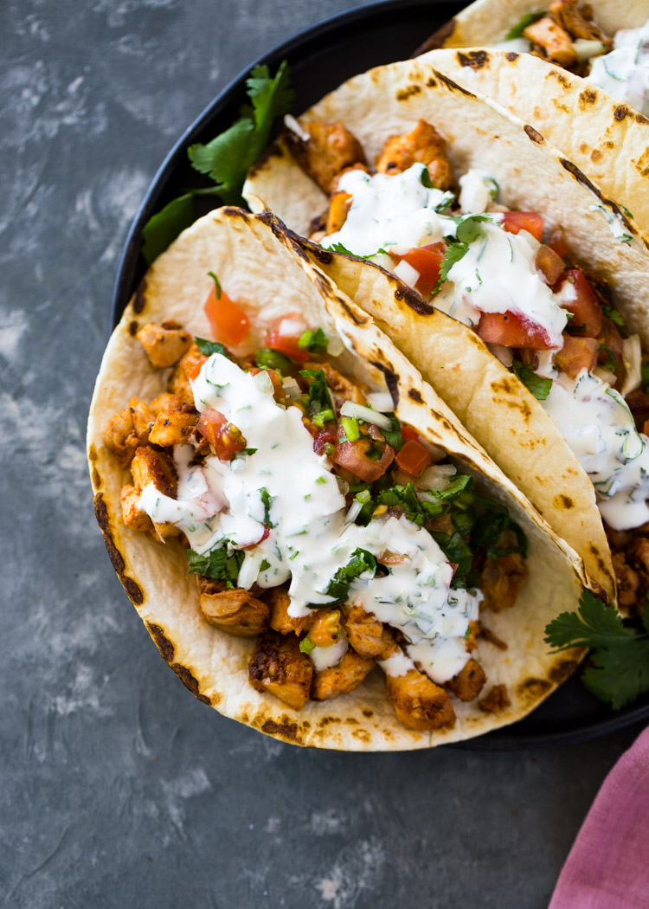

Chicken Tacos
Home

Here is an image of the chicken taco after following the recipe!
Description
Just 20 minutes to get these chicken tacos on the table! Juicy, flavorful, and absolutely mindless in the best way.
Ingredients list
- 1 pound chicken thighs, bonless skinless, or chicken breasts
- 2 cloves garlic minced
- 1 tablespoon lime juice , optional
- 2 tablespoons olive oil
- 1 tablespoon chili powder
- 1/2 teaspoon paprika, optional
- 1/2 teaspoon garlic powder, or onion powder
- 1/2 teaspoon salt
- 1/4 teaspoon black pepper
- 8 small corn or flour tortillas
Instructions
- Add the chicken, garlic, olive oil, lime, and spices, to a large bowl or zip-seal bag and stir or shake to combine.
- Heat a large pan to medium-high heat. Cook chicken 6-7 minutes per side or until it is no longer pink and the internal temperature of 165 degrees F. Remove from heat and cool for at least 5 minutes. Slice or chop into small cubes.
- While the chicken is cooking, combine the chopped tomato, jalapeno, onion, cilantro, and lime juice in a small bowl. Char tortillas on the stovetop over the flame until lightly charred (this step is optional).
- Assemble tacos by placing about 1/4 cup of chicken into each tortilla. Top with a few tablespoons of the onion-tomato mixture and a drizzle of cilantro sauce.
Here is the original link!